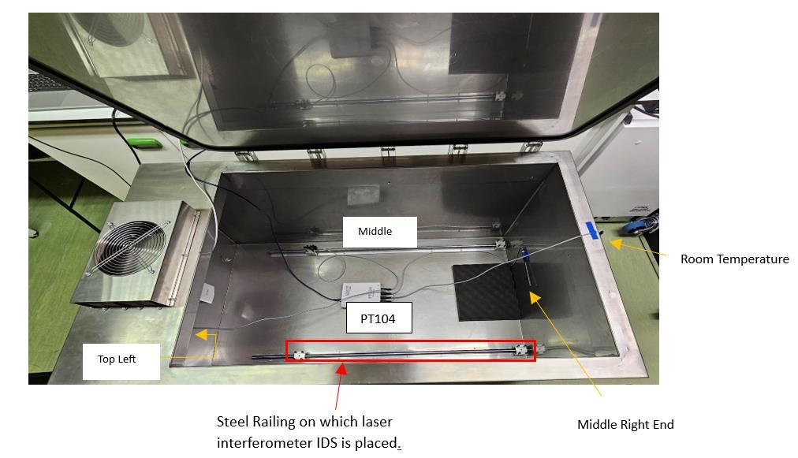

Environmental coupling
Configuration-specific responses near 0.4 µm/hPa and 6 µm/°C show that pressure and temperature produce measurable OPL change.
EXOhSPEC-CLFCD
A research track following EXOhSPEC from the 2024 MSc feedback architecture through multi-day closed-loop validation, multi-line detector tracking and the V19–V24 thermal-diagnostic campaign. V25 is the next physical camera-airflow test.

Disturbance rejection
The practical objective is long-duration sub-pixel stability while temperature, pressure, humidity, optical path and actuator history continue to change. This is not a single set-point step response.
Configuration-specific responses near 0.4 µm/hPa and 6 µm/°C show that pressure and temperature produce measurable OPL change.
A selected comparison window reduced dY RMS from 2.72 px to 0.69 px. Interval definition and disturbance history remain essential context.
Long-duration regulation inside ±0.10 px about an unbiased reference has not yet been demonstrated.
2023–2026
Select a stage to trace what was done, what was learned and why the next stage followed.
Mapped the optical, thermal and software system; tested the IDS3010, BME680/ECU, PT104 and early enclosure control. The thesis established the environmental-stability problem and a first feedback architecture.
Two time scales
The slow thermal loop carries coarse drift; the fast optical element handles bounded residual image motion. Cumulative AO travel is monitored so that persistent offsets can be unloaded thermally.
V17–V18
V17 demonstrated 88.59 h of settled hybrid feedback. V18.1/V18.2 then tightened the short-run detector measurement using phase correlation, a multi-line ThAr ROI and synchronised PT104 logging.

Across 4,761 settled frames V17 reported dX RMS 0.0594 px and dY RMS 0.1631 px, with 100% of the settled measurements within ±0.5 px. The result is an endurance demonstration rather than a claim that every axis beat every shorter run.
Read the V17–V18 progression
V18.2 reported dX RMS 0.0373 px, dY RMS 0.0990 px and radial RMS 0.1058 px over 3.98 h of feedback. These remain detector-plane metrics; they are not presented as calibrated stellar radial-velocity precision.
V19–V24
Passive periodicity, camera-TEC interventions, a replacement LK220, controller/pump optimisation and a 180° camera rotation progressively narrowed the next question without claiming a single-component root cause.
A five-hour passive run connected the repeating timescale across room/chiller/camera/OPL/dY telemetry. It motivated isolation experiments rather than proving chiller causality.
Camera TEC OFF reduced coolant heat pickup and external camera temperature, while V23 showed that outlet variability remained. Kp 2.5 and PERIOD 2000 ms were the strongest completed thermal settings.
Higher flow cooled the camera surfaces but increased chiller burden. The 75% setting at ~1.10 L/min was selected as the practical compromise for the next optical test.

After the 180° camera reorientation, the early ~28 min interval reached about +0.64 px dY and −0.32 µm OPL change while detector/coolant values remained comparatively stable. V25 therefore tests whether gentle side-vent airflow can reduce the spatial camera-body gradient without adding vibration.
Current status: two 30 mm Sunon fans ordered; black TPU v1.1 sealed mounts submitted for printing. No V25 performance result exists yet.
Read the V19–V24 synthesis